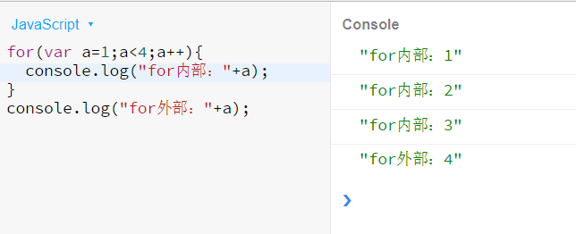
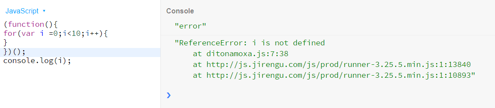
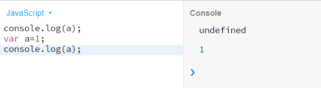
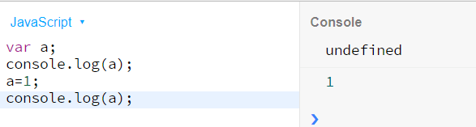
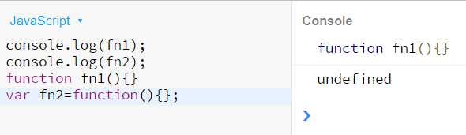
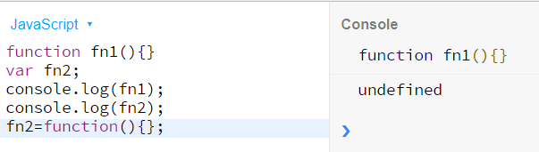
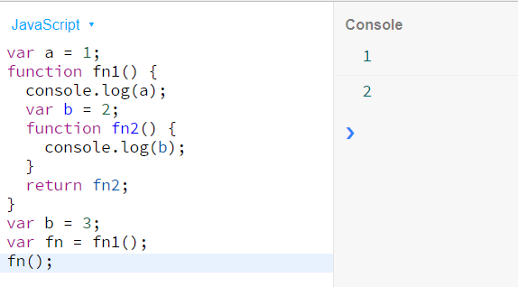
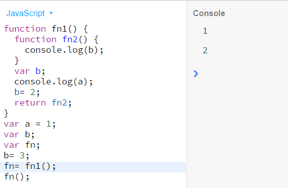

js作用域的相关知识
众所周知，在ES6之前，JavaScript是没有块级作用域的，如下图所示：

学过其他语言的同学肯定有点诧异，为什么会这样呢？因为js还是不同于其他语言的，在ES5中，只有全局作用域和函数作用域，并没有块作用域，当然我们可以实现块作用域的功能。看下面代码:

在这段段代码中，我们使用立即执行函数（IIFE）创建了一个局部函数来模仿块级作用域。在ES5时代，JavaScript的作用域只有用全局作用域和局部作用域的说法。到了ES6时代，块级作用域的登场。
一、关于ES5时代
1.变量提升
说到js的变量提升，就不得不说一下js的词法分析。总所周知js代码自上而下执行，但是在js代码执行前，会先进行词法分析。所以js运行要分为词法分析和程序执行两个阶段。
js词法分析主要分为3个步骤：
1.分析形参：如果函数有形参，则给当前活动对象增加形参属性，默认为undefined。
2.分析变量声明：如果有类似var a 之类的声明，若没有该属性则增加属性，若已存在则不做操作。默认为undefined。变量的赋值在执行阶段才进行，即执行到该变量的时候才有 a ＝ 11。
3.分析函数声明：类似 function a（）{}，若当前活动对象没有该属性则新增否则重写该属性为方法a。
如图所示，在这段代码中，按照一般的逻辑，第一个console.log会报错为“a is not defined”。

但是事实上，根据js词法分析的第二步，var a这个声明会被提前到代码的顶部。但是a=1这个赋值却不会，所以这段函数正确的步骤为：

这就是所谓的变量提升。
2.函数提升
在js中，我们常见的常见函数的创建方式有三种——函数构造式（不推荐使用，此处不做分析），函数声明式和函数表达式。下面第一行的代码为函数声明式，第二个为函数表达式。
1 function fn1(){}
2 var fn2=function(){};
在以上两种创建方式中，函数表达式的常见方式与普通变量var a=1的创建方式相同，因此它也会受变量提升的影响。而另一种，函数声明式会存在函数提升的情况，并且函数提升比变量提升优先级高！因此分别在创建前打印上述fn1和fn2得到以下结果：

根据变量提升和函数提升的分析得：

因此，fn1是作为函数声明被提升到最前面，而fn2先被作为变量创建并提到顶部，然后在相应位置被赋值的。
3.作用域链
我们在上面说到js在ES5时代没有块级作用域，只有局部作用域和全局作用域。作用域链用于保证对执行环境有权访问的所有变量和函数的有序访问。看下图，按照一般的思路，b输出为3。这里就用到了作用域链的知识。

当函数在执行的过程中，先从自己内部找变量。如果找不到，再从创建当前函数所在的作用域去找, 以此往上。因此我们分析调整函数得到下图。在这个函数中给fn赋值为fn1()，即fn1的返回值fn2。在运行fn时，即运行fn2。此时fn2的内部是没用b的，因此我们要去fn2的创建环境中找b=2。所以此处输出为2.

二、ES6时代
1.let和const的来临
首先let 和 const的作用和var是相同的，但是都是不存在提升，声明的都是块级标识符。大括号内部即形成块级作用域，此时let声明的a在块级作用域外是访问调用不到的
1 { 2 let a=1; 3 } 4 console.log(a)//报错
并且let和const都禁止重复声明的：
1 var a = 30; 2 var message = 2; 3 // 这两条都会抛出语法错误 4 let a = 40; 5 const message = 1;
const声明的常量必须进行初始化，const定义的常量不能修改，但是用const声明的对象可以修改值，即
1 const a; // 语法错误：常量未初始化 2 const b = { 3 name: 'a' 4 }; 5 b.name = 'b'; // 可以修改 6 7 // SyntaxError: "person" is read-only 8 b = { 9 name: 'c 10 }
let和const声明不会像var一样提升到作用域顶部，如果在声明之前访问这些变量，会形成所谓的临时死区(Temporal Dead Zone)即使是相对安全的typeof操作符也会触发引用错误。用let来举例（const也一样）：1 console.log(typeof value); 2 let value = 1;
1 console.log(typeof a); 2 if(1){ 3 let a=1; 4 }
而在上述的代码中，let在块级作用域中，因此在全局作用域中不存在所谓的死区，因此此处打印出undefined。
2.全局块作用域绑定
在全局作用域中，var 声明的变量会成为全局对象（浏览器环境中的window）的属性。这意味着var很可能会无意中覆盖一个已经存在的全局变量。1 var Test=1; 2 window.Test === Test; // true
let或const不能覆盖全局变量，而只能遮蔽它。
1 const foo = 1; 2 window.foo = 2; 3 console.log(foo); // 1 4 console.log(window.foo); // 2
在实际开发中，let实际上与我们所用的的var的用法是一样的，直接替换符合逻辑。对于需要些保护的变量，我们要使用const。默认使用const，只有确实需要改变变量的值时使用let。

昵称：
退出 订阅评论
[Ctrl+Enter快捷键提交]
· 为提升用户体验 苹果地图故意延长预估达到时间
· 港媒：香港同股不同权公司上市或于4月份生效
· 摩拜ofo均取消月卡优惠 恢复到20元
· 外卖员的酸甜苦辣：有人让帮倒垃圾 一个投诉扣600元
· 中科院阿里云发布国内首个超导量子处理器
» 更多新闻...
· 领域驱动设计在互联网业务开发中的实践
· 步入云计算
· 以操作系统的角度述说线程与进程
· 软件测试转型之路